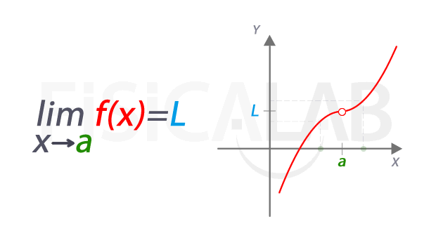

El límite es el valor al que se acerca una función o una secuencia cuando su variable independiente se aproxima a un valor determinado. Es una forma de estudiar el comportamiento de una expresión a medida que sus entradas se acercan a un punto específico, sin necesidad de llegar exactamente a ese punto.
Los límites se dividen en varios subtemas importantes, cada uno enfocado en situaciones y conceptos específicos. Algunos de los principales son: